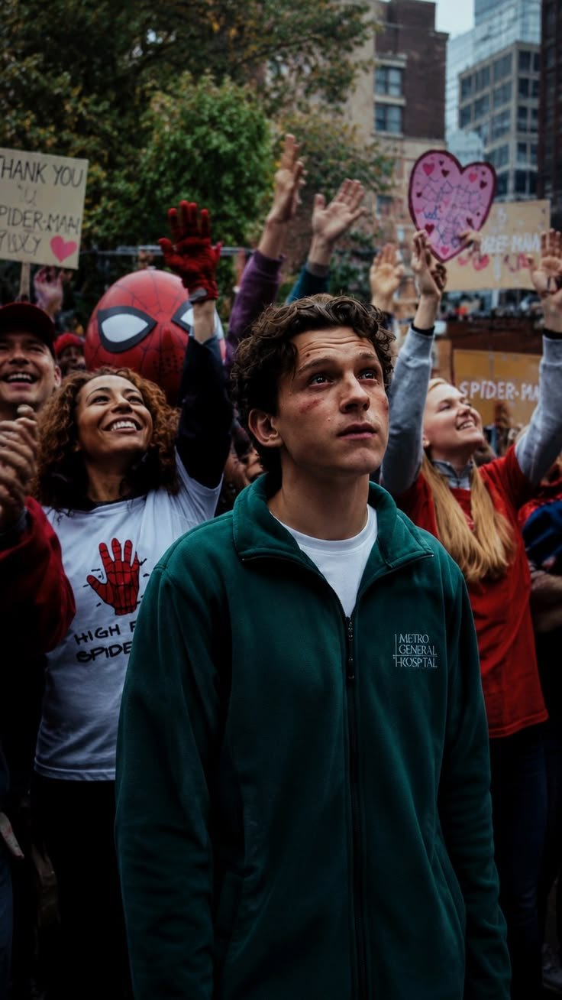

Головний герой
Людина-павук / Пітер Паркер
У ролі Том Голланд
Через кілька років після того, як заклинання Доктора Стренджа стерло його з пам’яті всіх людей, Пітер живе сам і повністю присвячує себе захисту Нью-Йорка. Ніхто не знає його імені — і це водночас його свобода та найважчий тягар.